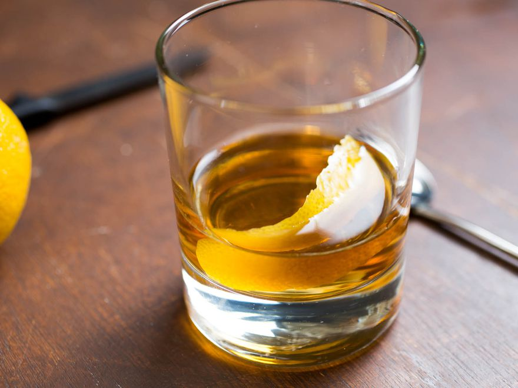

Paul Clarke's Sazerac Cocktail Recipe

Sazerac Cocktail
Source: https://www.seriouseats.com/cocktails-recipes-the-sazerac
Credited as being among the first true cocktails, the Sazerac is a New Orleans original.
Ingredients
- 1 teaspoon sugar
- 3 or 4 dashes Peychaud's Bitters
- a few drops water
- 2 ounces rye whiskey (such as Sazerac Rye)
- 1 teaspoon Herbsaint, Pernod, pastis, or absinthe
- lemon peel
Steps
- Chill an Old Fashioned glass or small tumbler in your freezer.
- In a mixing glass, combine sugar, Peychaud’s Bitters, and a few drops of water. Mix until sugar is dissolved, and add rye. Add plenty of ice, and stir for about 30 seconds.
- Pour Herbsaint, pastis, or absinthe into your chilled glass, and rotate glass until the inside is well coated; discard the excess. Strain the liquid from your mixing glass into the serving glass. Twist a piece of lemon peel over the drink. Indulge.